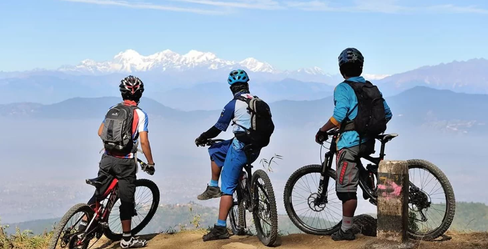

Best Cycling Trails in Kathmandu for Adventure & Fun

Why Mountain Biking is growing in Nepal amongst youth?
A sudden rise in the number of cyclists has been noticed in Nepal and that too among the youths. The reason behind the popularity of mountain biking/cycling among the youth has several reasons, but what tops the list is the fact that the youth chase fun and adventure, and they want to explore nature in the most thrilling way. While for some cycling is just for fun and adventure, some youth view cycling as the best way to keep their body
Bhanjyang Cycling
healthy as cycling can burn fat as well as strengthen the joints. Active biking is also believed to reduce stress by releasing hormones like endorphin. Another interesting fact about cycling is that it not only reduces stress and anxieties, but also boasts confidence as cyclists challenge themselves to go beyond the hills, which they thought would be impossible at first. Together with this, experts also believe that it is the best form of cardio exercise. And with the recent fuel crisis and price hike, youth are wondering why are they even riding bikes when they can cycle around the city in the best way possible.
Routes near Kathmandu:
1) Kathmandu-Nagarko-Cycling
Located 28km west of Kathmandu, Nagarkot is one of the fascinating locations to explore the countryside view and enjoy the panorama of the Himalayas. The Kathmandu to Nagarkot cycling is famous among cyclists as it includes not only the thrill but also allows one to explore the ancient temples of the city and palace like the Bhaktapur Durbar Square and Changunarayan temple.
The cycling journey to Nagarkot can be started from Koteshwor and continued towards Nagarkot. The trail initially passes through the roadway and then through some steep climb. Cyclists can enjoy downhill cycling through Changunarayan Temple, the oldest UNESCO enlisted cultural heritage site, and also visit the Bhaktapur Durbar Square.
The Pottery square of Bhaktapur Durbar square is getting popular for pottery training. So try them when you are within the area.
Difficulty level: Moderate
Distance Cover: 28 KM (one way)
Duration: 4-5 hours
2) Balaju to Kakani Cycling:
Kakani-Cycling
The Balaju to Kakani cycling trail is another popular route for the nature lover who wants to spend some time far from the hustle. The journey can be started from Bypass and continued through the Shivapuri Nagarjun forest reserve to Kakani.
The cycling route is straight up through the main road through Balaju, Bypass, that winds off to Jitpur and then to Kakani. Kakani is also renowned as a picnic spot and offers stunning sights of the Himalayas. Once you end up in the location, rest under the shade and spend some time. You can either return through the same trail or continue your journey towards Budhanilkantha, passing through the Shivapuri National Park that homes several plants and animal species. The ride from Kakani to Budhanilkantha is very refreshing.
If you are visiting Kakani for the first time, make sure to try some fresh strawberries from the local strawberry farm.
Distance cover: 23 KM
Difficulty level: Moderate
Duration: 5-7 hours
3) Patan to Lakuri Bhanjyang Cycling:
Lakuri-Bhanjyang-Cycling
The Patan to Lakuri Bhanjyang trail is a memorable route in the sense that the trail passes through the oldest city in the area, Lubhu, which is renowned for handcrafted looms and blocks. The cycling journey starts from Patan and winds off to Lubhu city. Cycling along the rough track, you will arrive at Lakuri Bhanjyang. On a clear day, you can enjoy the 360-degree view of the Kathmandu valley together with snow-capped pinnacles. After exploring the place, you can cycle back through the rustic valley of Bebar Khola towards Godawari or Bishanku Narayan.
Distance: 18 KM
Duration: 3-4 hours
Difficulty level: Moderate
4) Swayambhu to White Gumba Cycling:
White-Gumba-Cycling
Located on the hill opposite Swayambhu is the white gumba. The Gumba sits on top of a hill overlooking the city, offering a perfect ambiance for contemplation.
The climb up to the Gumba is strenuous and covers a distance of 4KM. The cycling journey starts from Swayambhu, Halchowk, and continues through a mixed trail of paved and gravel roads. Leaving behind the holy temple Ichhangu Narayan dedicated to lord Vishnu, you will continue to pedal for another 1-1.5 hours through the steep ascent to Seto Gumba. On the way, you can enjoy the views of locals working in the field. As you approach the location, you will notice the fluttering prayer flags.
If you want to visit the Gumba, plan your trip on Saturdays. However, on holidays like Saturday, you will be swarmed by visitors. If you have been to the Gumba before and want some peaceful time. You can go on the trip any day you like.
Distance: 4KM
Duration: 4-5 Hours
Difficulty Level: Technical
5) Budhanilkantha-Tokha Cycling:
Tokha-Cycling
On this cycling trip, you will cycle through the diverse terrain and visit the major attraction of the region like Jhor waterfall, Chandeshwari temple, and Budhanilkantha temple. Initially, on the journey, you will cycle through a black-topped road leaving behind the stops like Gangalal hospital and Hattigauda. Once you arrive at Budhanilkantha, you will pedal through the rocky route to Tokha. The trail from Budhanilkantha to Tokha is a mix of single and jeep tracks with a few steep climbs until you arrive at Tokha's main bazaar.
After spending some time in the Jhor waterfall and enjoying the sights, head down the hill to Samakhusi to end the journey.
Distance: 23 KM
Duration: 3-4 hours
Difficulty: Moderate
6) Kathmandu-Markhu Cycling:
Markhu-Cycling
The Kathmandu to Markhu cycling is a perfect route to enjoy the rural side of the Kathmandu valley. The major attraction of this trip includes Dakshinkali temple, Indra Sarovar lake, Kulekhani reservoir, and boating in the lake.
Start your cycling journey from Balkhu and continue to pedal through the black-topped road till Chobhar. On the journey ahead from here, you will ride past Taudaha and the Chalnakhel bus stop towards the Dakshinkali temple. The trail ahead is the off-road track. After covering approximately 11km, you will see a glimpse of Indra Sarovar lake. From the village of Kulekhani, you will ride another few hours to arrive at Markhu.
Feel free to do some boating and fishing while in the area. You can extend your trip up to Chitlang or end the trip and follow the same trail back home.
Distance: 41 KM
Duration: 7-8 Hours
Difficulty: Hard
7) Kathmandu-Budhanilkantha-Kapan Monastery (The Helipad Trail):
Kapan-Monastery
The Kathmandu-Kopan Monastery route is one of the fascinating routes of the valley that winds off from Chakrapath towards Budhanilkantha, passing through Bansbari and Golfutar. Prior reaching the gate of Budhanilkantha, you will take a right and pedal through the graveled path. The route is somehow technical with dusty trails and off roads until you arrive at the helipad region. From the site, you can enjoy the panoramic sights of the valley and then continue your descending ride along the gnarly paths towards the Kapan Monastery. The Tibetan Monastery sits atop a hill and overlooks the city. Spend some time within the area and head back via Sukedhara.